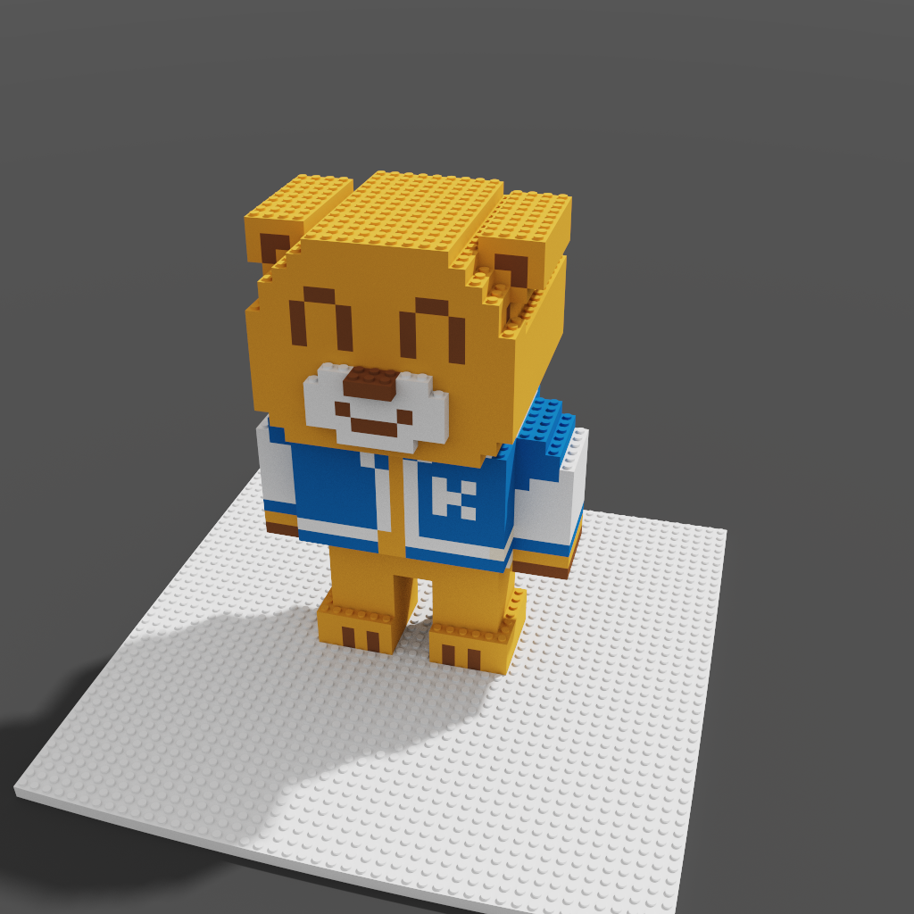
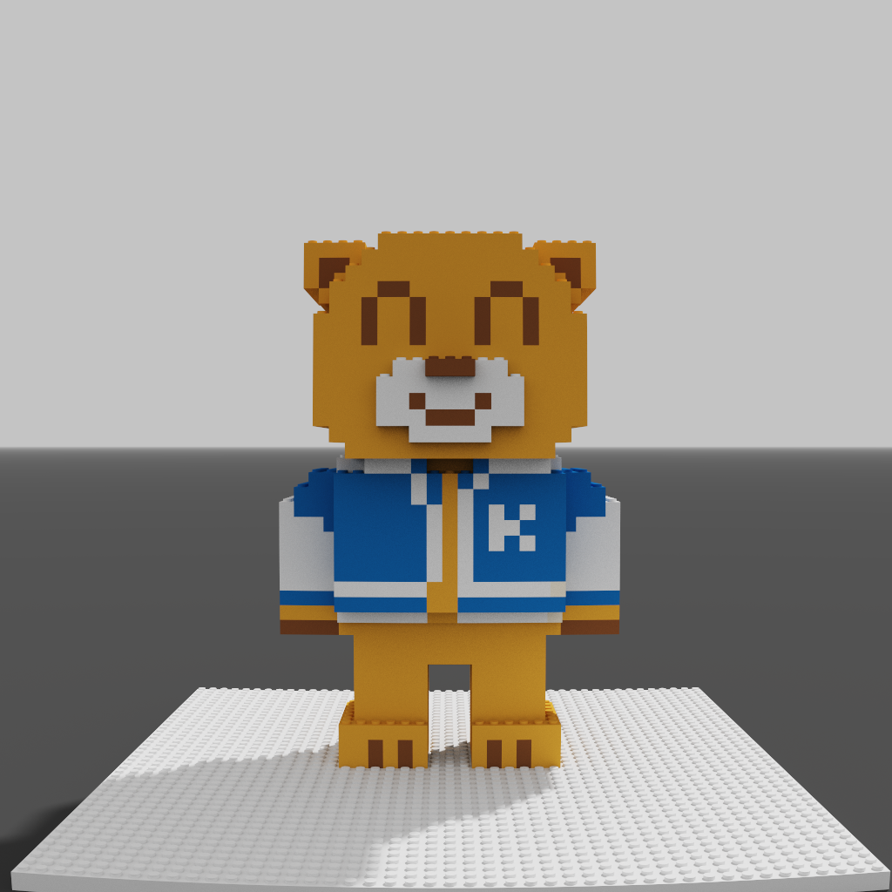
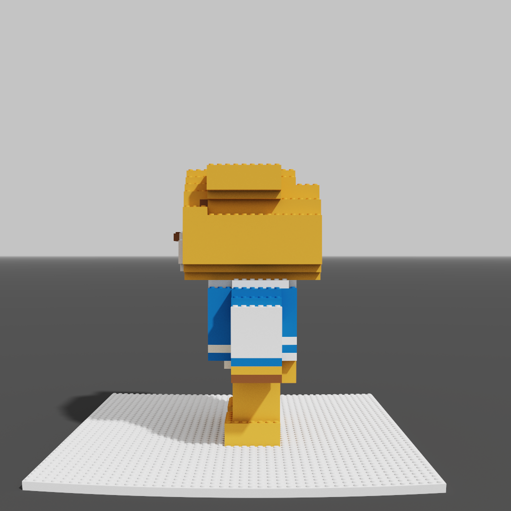
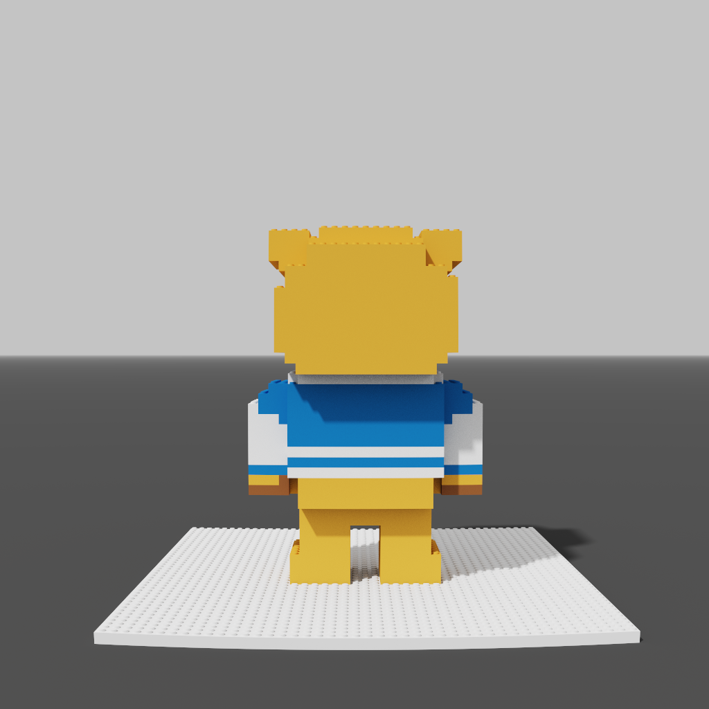
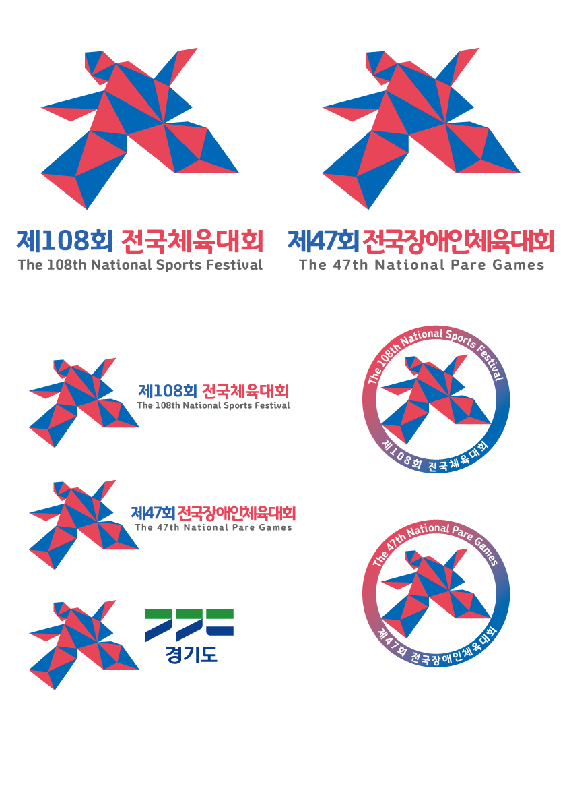
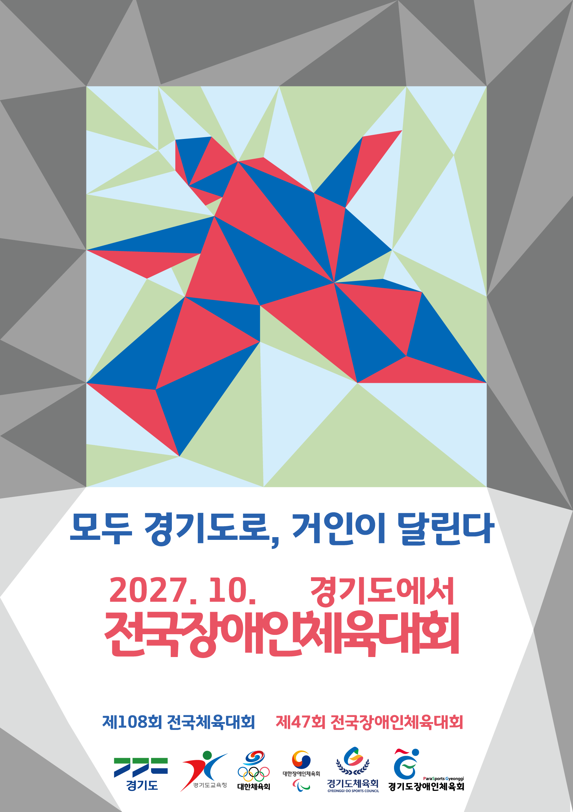
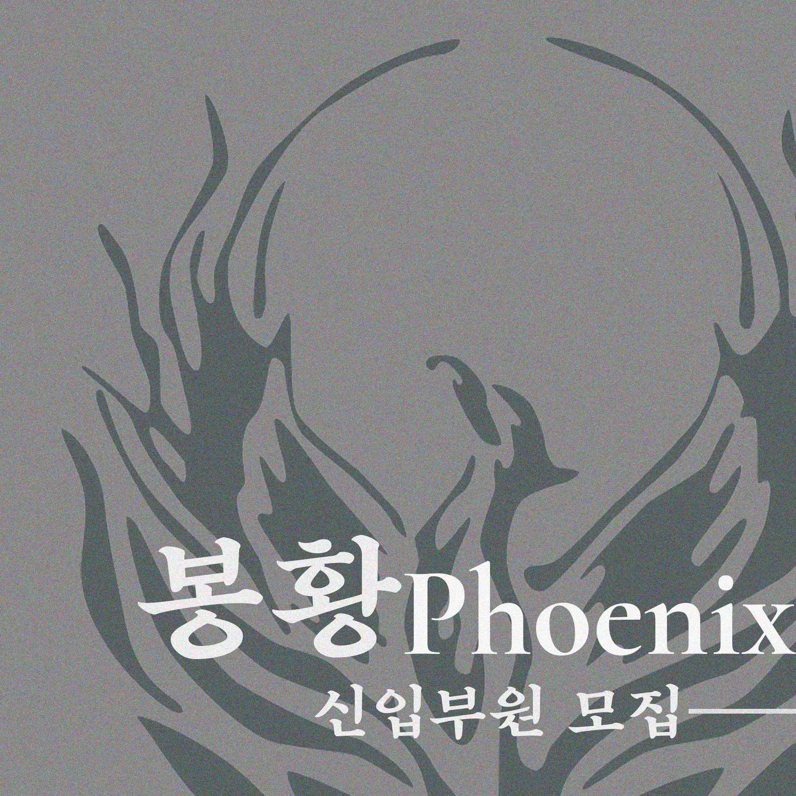
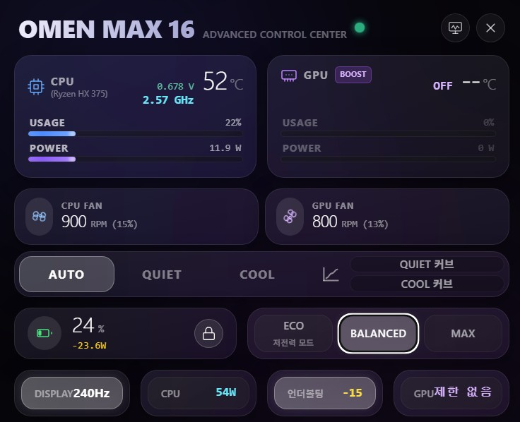

학교 마스코트 미니블록 디자인
3학년
학교의 마스코트 캐릭터를 활용하여, 입체적인 3D 미니블록 형태로 재구성 및 디자인한 결과물입니다.




상업정보교육과 · 문헌정보교육과 복수전공
안녕하세요, 문태양입니다. 정보를 수집하고 분류하는 데서 그치지 않고, 그것을 기획안, 시각적 디자인, 또는 실용적인 도구로 구현해 내는 과정을 즐깁니다. 일상의 불편함을 줄이거나 사회에 긍정적인 가치를 더하는 일에 관심이 많습니다.
About
상업정보와 문헌정보학을 함께 배우며, "정보를 사람들에게 어떻게 더 유용하고 매력적으로 전달할 수 있을까"를 치열하게 고민하고 있습니다.
복잡한 문제를 분석하고 실현 가능한 아이디어로 풀어내는 것을 좋아합니다. 도서관 정책부터 지역 축제까지 공간과 사람을 잇는 기획을 시도하고 있습니다.
추상적인 아이디어를 포스터, 엠블럼 등의 시각 디자인으로 표현하거나, 일상에서 바로 쓸 수 있는 프로그램과 기기를 직접 만들어보며 기술을 익히고 있습니다.
Activities
관심사를 바탕으로 도전했던 공모전 기획과 다양한 시각 디자인, 그리고 직접 코드를 짜서 만든 웹/하드웨어 프로젝트 기록입니다.
3학년
학교의 마스코트 캐릭터를 활용하여, 입체적인 3D 미니블록 형태로 재구성 및 디자인한 결과물입니다.




그래픽 디자인 공모
경기도에서 열리는 제108회 전국체육대회 및 제48회 전국장애인체육대회의 통합 엠블럼과 공식 포스터를 기획하고 구현했습니다.


그래픽 디자인 공모
제주도에서 개최되는 제107회 전국체육대회의 상징성을 담은 메달 앞면과 뒷면 디자인 작업입니다.


그래픽 디자인 / 교내 활동
밴드부 '봉황' 카드뉴스, 재학생 실사용 체크카드 및 학과 단체복 등판 타이포그래피 시안 디자인 기록입니다.



정책 제안 공모
환경 문제와 도서관의 역할을 결합한 「순록: 순환하는 녹색 도서관」 기획안입니다. 다회용기 리필 거점 등 예산과 공간 혁신안을 도출했습니다.
아이디어 기획 공모
지역 특산물과 상권을 연계한 「상주 쌈박 페스티벌」을 종합 기획하여 핵심 콘텐츠 및 공간배치 개념도를 작성했습니다.
학술 연구 / OPEN-Qual 모형 개발
현대 복합문화기관으로서의 도서관 서비스 품질을 체계적으로 진단하기 위해 잠재적 불만 요인을 포함한 'OPEN-Qual' 평가 모형을 제안했습니다.
복잡한 기능 없이 하루의 목표를 직관적으로 추가하고 완료를 체크할 수 있는 브라우저 기반의 가벼운 웹 도구입니다.
프로젝트 열기 →이름을 입력하고 글꼴과 모양을 선택하여 배경이 투명한 디지털 도장 이미지를 실시간으로 생성 및 다운로드하는 도구입니다.
프로젝트 열기 →감정 상태(행복, 불안 등)를 입력받아 위로의 문장을 무작위로 제시합니다. 연속 출현 방지 알고리즘이 적용되었습니다.
프로젝트 열기 →초등학생 집중력 향상을 위한 2D 동물 짝맞추기 게임입니다. 카드 뒤집기 애니메이션과 판정 로직을 구현했습니다.
프로젝트 열기 →중학생 타겟으로 KDC 강목 짝맞추기와 4지선다형 퀴즈를 통합하고, 타이머 제한 및 실시간 채점 피드백을 제공합니다.
프로젝트 열기 →학생들의 역량 평가 결과를 입력받아, 사전/사후 다각형 레이더 차트로 렌더링하여 성장을 직관적으로 분석합니다.
프로젝트 열기 →도형의 회전 및 뒤집기 조작을 시각적으로 확인하는 교구로 연습 모드와 목표를 맞추는 퀴즈 모드를 지원합니다.
프로젝트 열기 →
HP Omen 16 랩탑의 발열 제어를 위해 BIOS 수준의 명령을 직접 호출하여 동작하는 전용 쿨링 소프트웨어를 개발했습니다.
WOL 환경의 한계를 하드웨어적으로 극복하여 PC를 원격 부팅하고 좌석 상태를 모니터링하는 ESP-32 기반 펌웨어입니다.
GitHub 코드 보기 →Contact